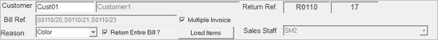

The header part of a sales return document is displayed.

Customer: Enter customer code (configurable). The corresponding customer name is displayed in the next field. Alternatively, press F2 and select the customer code from the Browse window (Customer Search window).
Note: If customer is selected, then the following selections are validated against the customer.
Return Ref.: The document prefix set for bill return gets displayed in the first field. The document number for the bill return is generated automatically and is displayed in the next field.
In sales return with reference, you can select the items to be returned/ exchanged in different ways, as follows.
By entering bill reference: You can select the entire items from the required bill/(s).
If it is a single bill, enter the bill reference in Bill Ref.. The bill reference, i.e., the Document Prefix and Document Number of the bill have to be entered in the consecutive fields respectively.
If there are multiple bills, select the Multiple Invoice option to enter multiple bill references. On selecting this option, the Sales Return Document Search window is displayed. Click here to know how to select multiple sales bills for return.
Specify the reason for the return of the bill/(s) in Reason by selecting the appropriate reason code from the drop down list.
Select Return Entire Bill ?, if all the items billed in the selected bill/ (s) are returned/ exchanged. Partial return of bill/(s) are made easier with the help of this option. Click here to know more.
Click Load Items to load the items of the selected sales bill/(s) in the item details grid.
The sales man ID, if any, in the selected bill will be displayed in the Sales Staff field.
By entering stock number: You can directly scan/ enter the stock number of an item in the direct entry grid. Click here to know more.